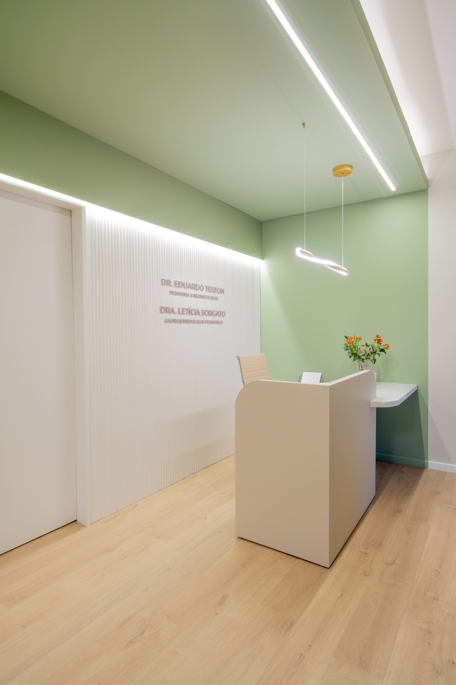
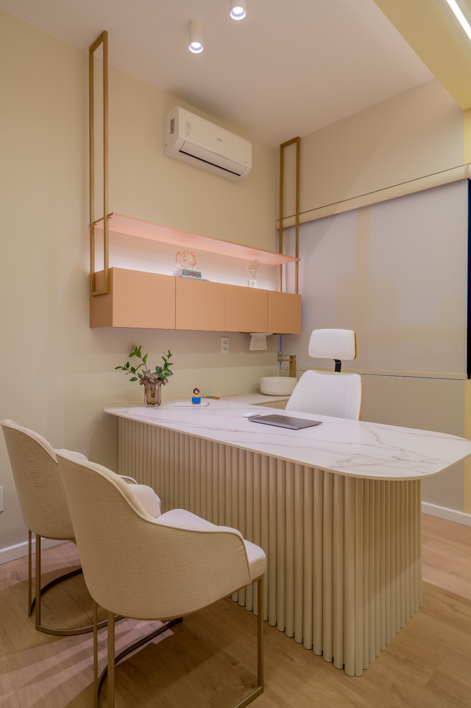
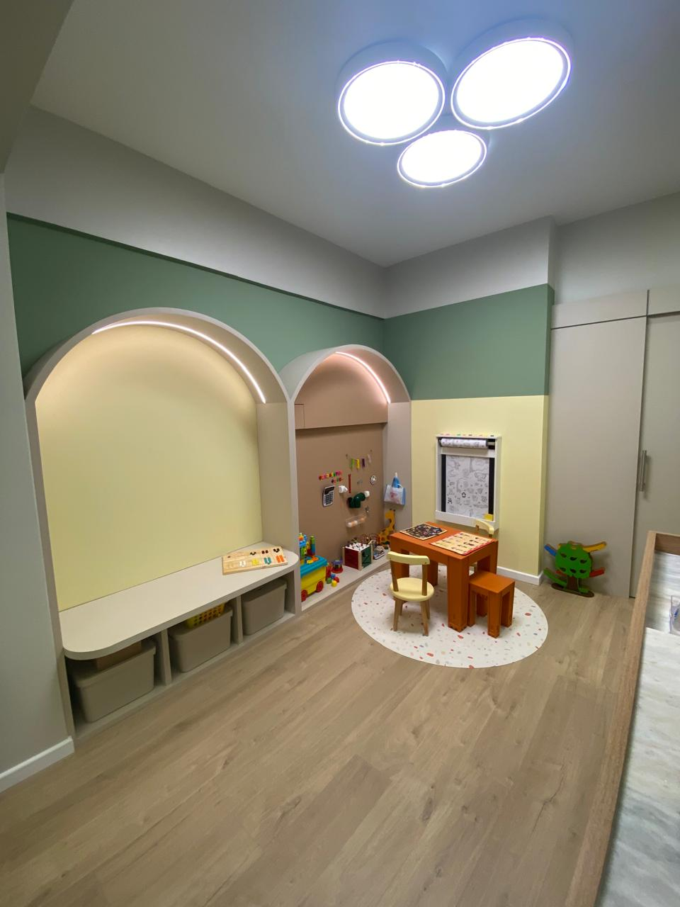
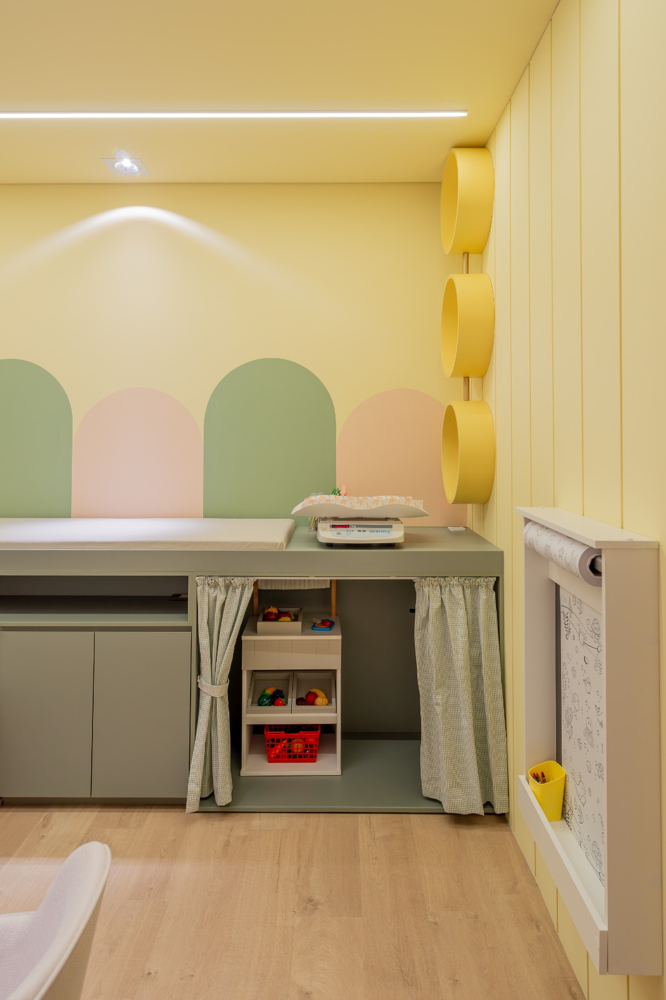
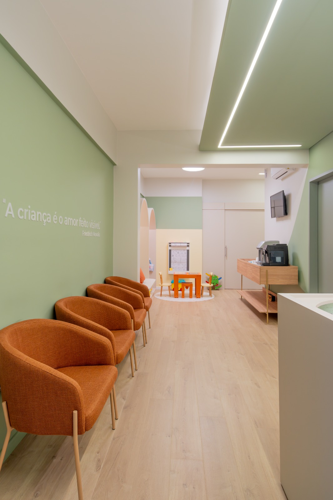
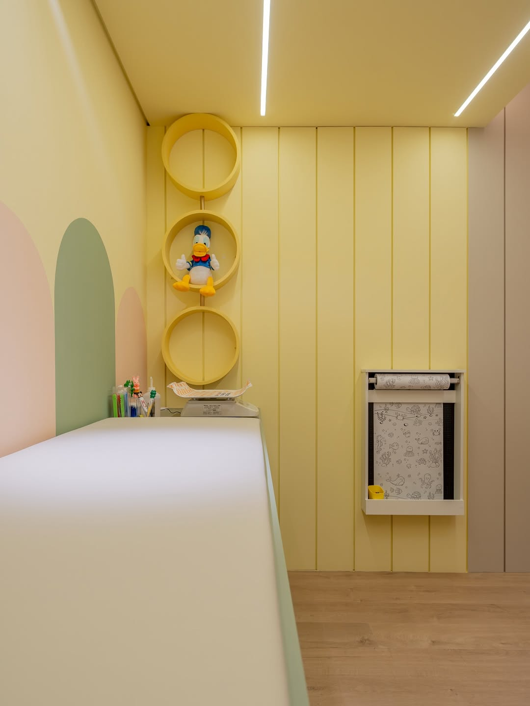
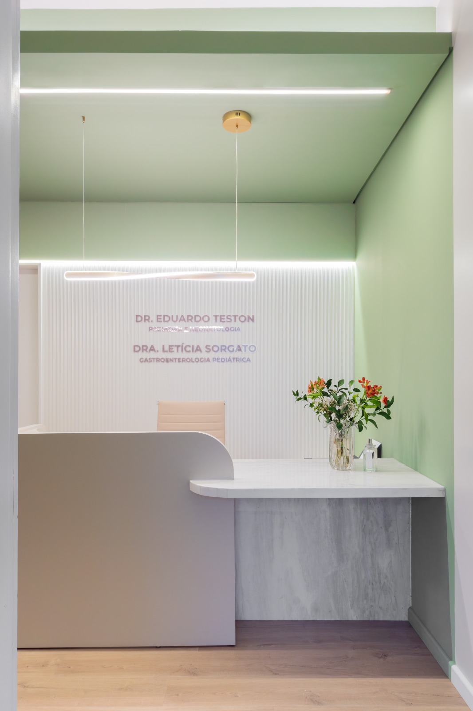

Quando a barriga do seu filho vira preocupação diária.
Pediatria e gastroenterologia pediátrica em Chapecó, com o tempo e a escuta que refluxo, constipação, alergia alimentar e dor abdominal exigem para serem investigados a fundo.
Dra. Letícia Sorgato · CRM/SC 35369 · RQE 24175 · RQE 24281 · Atendimento presencial em Chapecó/SC

Refluxo que não cede. Intestino preso há semanas. Um alimento que sempre cai mal.
Sintomas digestivos na infância costumam ser tratados como fase. Quando persistem, merecem uma avaliação dedicada, com investigação da causa.
Refluxo, regurgitação ou cólica que não melhora com o tempo
Constipação intestinal recorrente, com dor ou medo de evacuar
Suspeita de alergia ou intolerância a algum alimento
Dor abdominal frequente, sem causa definida
Baixo ganho de peso ou mudança no ritmo de crescimento
Alterações no fígado identificadas em exames de rotina
Uma consulta pensada para investigar, não para apressar.
Cada criança é avaliada de forma individualizada: histórico detalhado da alimentação e da rotina, exame físico completo, revisão dos exames já feitos e um plano explicado com clareza para os pais.
Ver como funciona a primeira consulta
Cuidado da saúde digestiva de bebês, crianças e adolescentes.
Da queixa comum que não passa às condições crônicas que pedem acompanhamento contínuo, sempre com o olhar completo de uma pediatra.
Refluxo gastroesofágico
Avaliação e manejo da regurgitação persistente e dos sintomas associados, do lactente ao adolescente.
Constipação intestinal
Investigação da causa, ajuste alimentar e acompanhamento até o intestino voltar a funcionar sem dor.
Alergias e intolerâncias alimentares
Diagnóstico, dieta de exclusão orientada e reintrodução segura dos alimentos, com suporte à família.
Dor abdominal recorrente
Esclarecimento das dores de barriga que voltam sempre, separando o que é funcional do que precisa de exame.
Doenças inflamatórias intestinais e do fígado
Acompanhamento especializado de condições crônicas, integrado à rotina pediátrica da criança.
Acompanhamento pediátrico
Crescimento, alimentação e desenvolvimento acompanhados de perto, com atenção especial ao aparelho digestivo.
O consultório




O que esperar do primeiro encontro.
Histórico completo
Alimentação, rotina, sintomas e história de saúde da família.
Exame físico e crescimento
Peso, estatura e curvas de crescimento avaliados de perto.
Revisão dos exames
Análise do que já foi feito, sem repetir o que não é necessário.
Plano explicado com calma
Conduta, sinais de alerta e próximos passos, em linguagem clara.

Dra. Letícia Sorgato
Médica formada pela Universidade do Oeste Paulista (UNOESTE), em Presidente Prudente. Fez residência em Pediatria no Hospital Ana Costa, em Santos, e especialização em Gastroenterologia Pediátrica no Hospital Infantil Menino Jesus, em São Paulo.
Atende presencialmente em Chapecó, com foco na saúde gastrointestinal de crianças e adolescentes. O cuidado é atento, acolhedor e individualizado: cada família sai da consulta entendendo o que está acontecendo e o que fazer a seguir.
Por que as famílias escolhem esse acompanhamento.
Foco exclusivo em pediatria
Atenção integral à criança e ao adolescente, do lactente à adolescência.
Formação em gastropediatria
Poucos pediatras têm esse aprofundamento em saúde digestiva.
Explicação clara para os pais
Você entende o diagnóstico, a conduta e o motivo de cada passo.
Disponibilidade para dúvidas
Orientação também entre as consultas, quando faz sentido.
Consulta sem pressa
Tempo real para investigar a causa, não só constatar o sintoma.
Ambiente preparado para crianças
Consultório acolhedor, pensado para deixar a criança confortável.
O que as famílias dizem depois da consulta.
Relatos de pais e responsáveis atendidos pela Dra. Letícia.
A Dra. Letícia atende de forma solícita, tanto presencialmente quanto pelo WhatsApp, tirando dúvidas e orientando. Não agenda consultas desnecessárias. Sua conduta se estende para além do consultório: além de gentil, é bem humorada.
Tatiane Castegnera
Pessoa maravilhosa, atenciosa, atendimento maravilhoso. Nem parece que é uma consulta. Agradeço por tudo que compartilhamos nesses últimos meses sobre a minha pequena, nessa fase difícil. A Dra. Letícia soube conduzir da melhor forma possível.
Evelize Barp
Não há palavras pra descrever a Doutora Letícia. É uma pessoa maravilhosa, ama o que faz, cuida do bebê com todo o carinho e a atenção que ele precisa. Acolhe a mãe e o pai que chegam com medo e dá suporte. Recomendo muito.
Falcão
A Dra. Letícia é carinhosa e atenciosa, esclareceu todas as minhas dúvidas, que não foram poucas. Depois da consulta presencial tive uma intercorrência e ela me deu todo o suporte, mesmo à distância. Ótima profissional.
Larissa Correa Pereira
Depoimentos espontâneos de pacientes. Resultados variam de caso para caso.
Perguntas antes de agendar.
A primeira consulta dura em média 1 hora. Os retornos, quando solicitados, ficam em torno de 40 minutos.
Sim. Todos os atendimentos são particulares. Não atendemos convênios médicos.
De 0 a 15 anos.
É a área da medicina dedicada à saúde digestiva de bebês, crianças e adolescentes. Vai de queixas comuns, como refluxo, dor abdominal e constipação, a condições mais específicas, como alergias alimentares, intolerâncias, doenças inflamatórias intestinais e doenças do fígado. Além do diagnóstico e do tratamento, orienta alimentação, crescimento e bem estar, sempre de forma individualizada.
Se tiver, sim. Leve exames recentes, relatórios de outros profissionais e a caderneta de vacinação da criança. Isso ajuda a evitar repetição de exames.
Pelo WhatsApp. A equipe confirma o horário disponível e passa as orientações para a consulta.
Seu filho merece uma consulta que investiga de verdade.
Agende pelo WhatsApp e leve para casa mais do que uma receita: leve clareza sobre o que está acontecendo e o que fazer.
Atendimento particular · Primeira consulta com cerca de 1 hora · 0 a 15 anos · Chapecó/SC